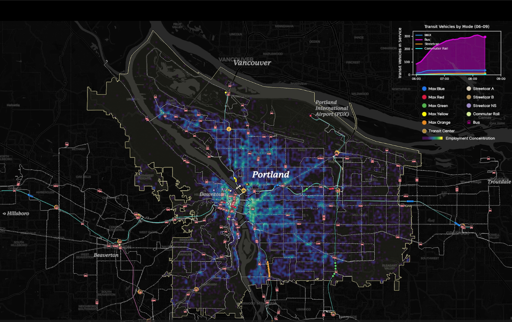
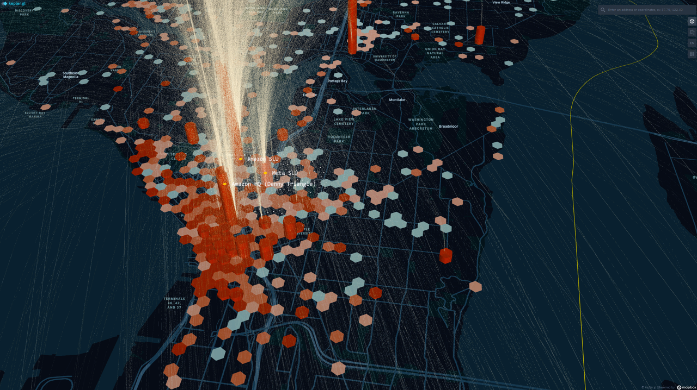
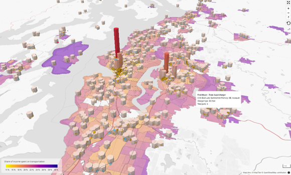
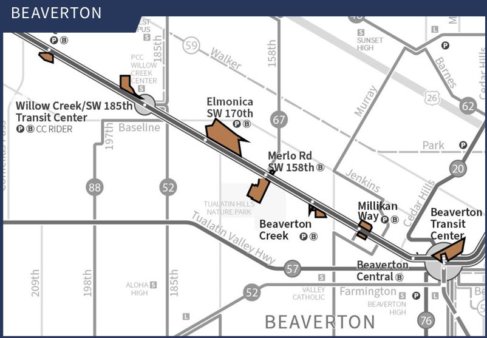
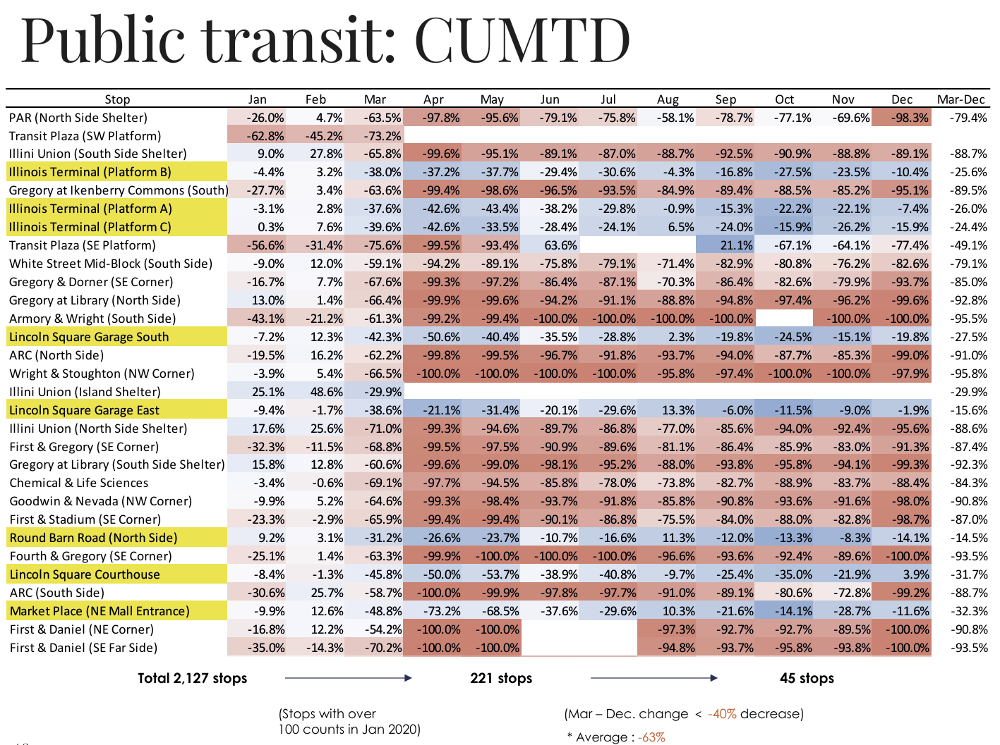
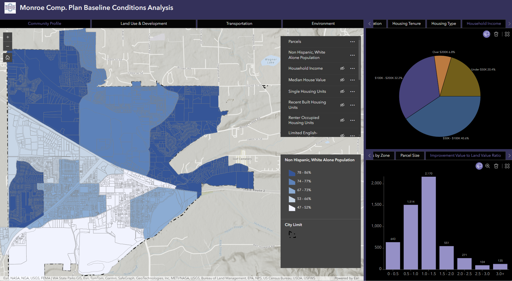
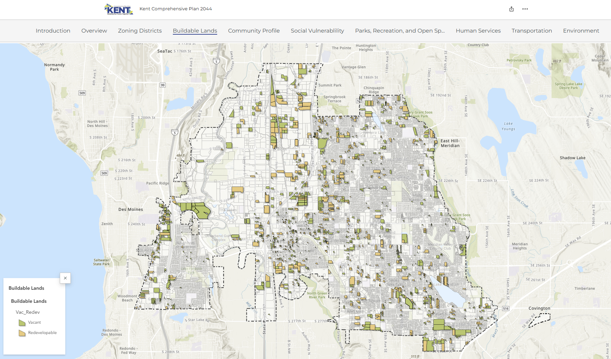
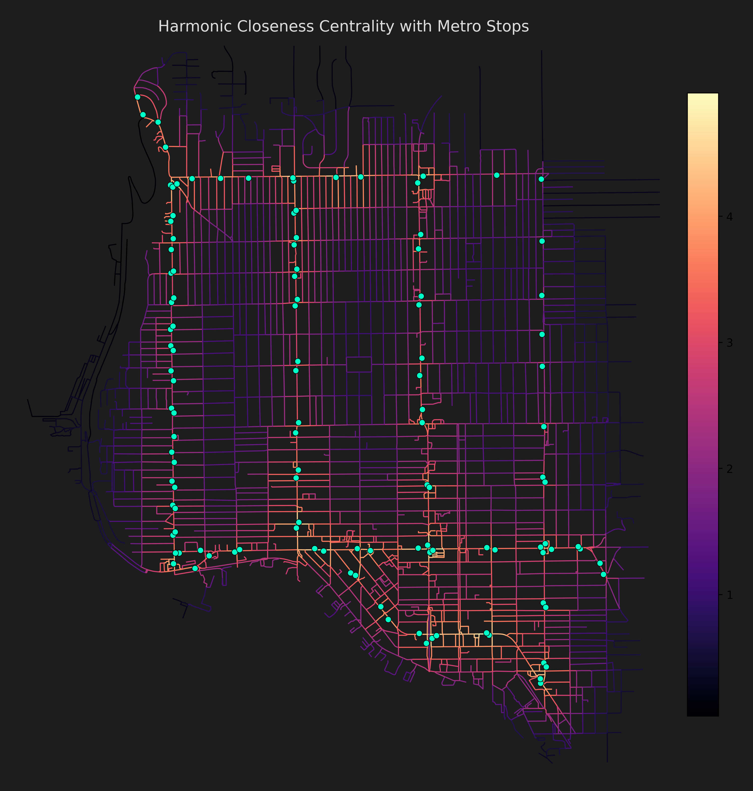
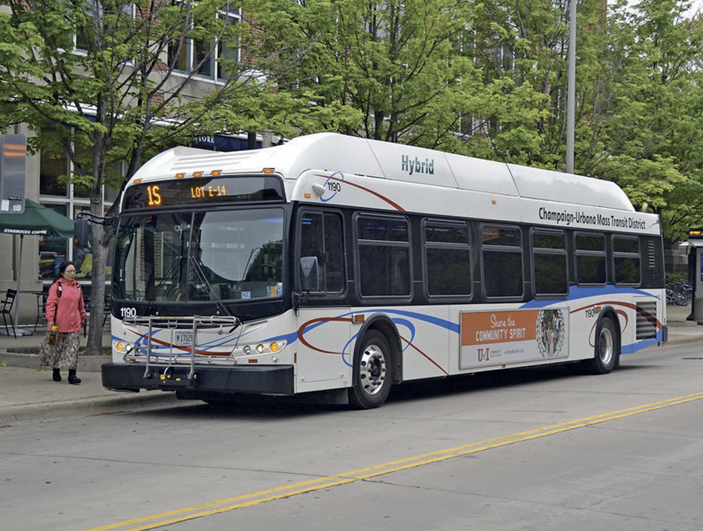
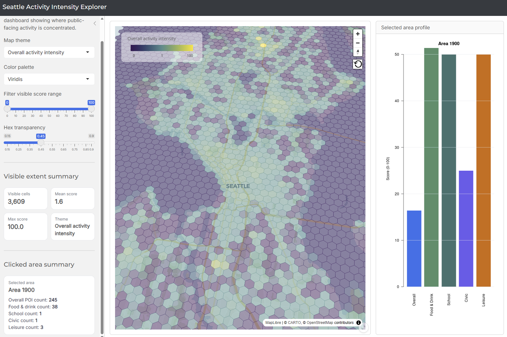

GTFS Visualization
LiveTransit movement visualization using GTFS feeds to show service patterns, route dynamics, and network activity over time through animated geographic output.
Selected work in transportation analytics, land use planning, dashboards, and geospatial storytelling, with a focus on mobility, accessibility, transit-supportive development, and data-informed public-sector decision-making. Across these projects, I combine spatial analysis, planning frameworks, and visual communication to turn complex public-sector questions into maps, dashboards, and narrative tools that support clearer decisions, stronger place-based understanding, and more accessible communication with both technical and non-technical audiences.

Transit movement visualization using GTFS feeds to show service patterns, route dynamics, and network activity over time through animated geographic output.

Interactive commuter flow map highlighting home-to-work origin-destination patterns, major employment centers, and regional commuting structure into Seattle.

Interactive R Shiny webmap exploring how EV charging infrastructure relates spatially to communities facing higher transportation cost burdens across the Puget Sound region.

Planning and analysis supporting a systemwide TOD framework for agency-owned properties near bus and rail stations across 26 cities and three counties.

Research project examining how COVID-19 disrupted travel patterns in the Champaign-Urbana region, with attention to mobility shifts, mode choice, transit use, and implications for transportation planning under prolonged uncertainty.

Interactive dashboard summarizing baseline land use, growth, housing, and community conditions to support comprehensive planning and stakeholder communication.

StoryMap communicating planning context, baseline conditions, and key issues through mapped narrative, graphics, and public-facing visual explanation.

Ballard case study using Cityseer and GTFS-informed network analysis to show how transit changes accessibility patterns and reveals corridor-level opportunity.

Comparative downtown analysis using urban form, centrality, frontage conditions, and active places to explore what makes a district not just walkable, but worth walking.

Interactive R Shiny webmap prototype that maps relative activity intensity across Seattle using a hex-based surface of public-facing amenities such as food, school, civic, and leisure destinations.